1. Archivos donde se define la pizarra
| Archivo | Rol | Cómo interviene |
|---|---|---|
| football/templates/football/task_builder.html | Template principal del editor táctico / task builder | Monta la UI de la pizarra, toolbar 2D/3D/interactiva, y expone por data-* todas las URLs de modelos, texturas, overlays y scripts. |
| football/static/football/js/sessions_tactical_pad.js | Runtime principal de la pizarra con Fabric.js | Inserta jugadores, balones, conos, flechas, porterías, zonas y recursos importados; genera canvas_state y timeline. |
| football/static/football/js/pitch_surface.js | Semántica de recursos y superficie 2D/flat | Define librería de emojis, labels, familias de recursos y fallback SVG del campo. |
| football/static/football/js/pitch_surface_25d.js | Renderer 2.5D / cenital realista del estadio | Construye el campo-estadio premium con SVG + texturas + overlays. |
| football/static/football/js/pitch_surface_preview.js | Renderer de previews de superficie | Versión compacta para miniaturas/previas del campo. |
| football/static/football/js/session_task_detail_3d.js | Renderer 3D del detalle de tarea | Carga el estadio/modelos 3D y proyecta objetos del estado gráfico. |
| football/templates/football/coach_abp_board.html | Plantilla del tablero ABP simplificado | Otra pizarra menor, útil como referencia de glyph-based board. |
| football/static/football/js/abp_board.js | Tablero ABP DOM/glyph | Usa caracteres como △ ▭ ➜ ● para material simple, no imágenes. |
2. Diagnóstico del sistema actual
- Jugadores/porteros/fichas: se pintan sobre Fabric como grupos, camisetas SVG embebidas y, en ciertos casos, sprites PNG o recortes fotográficos.
- Balón, conos, picas, porterías, flechas, líneas, zonas: en su mayoría se dibujan de forma procedural con
fabric.Rect,fabric.Circle,fabric.Line,fabric.Path,fabric.Triangleyfabric.Group. - Emojis: se insertan como
fabric.Textusando Unicode, no como imagen. - Campo 2D/2.5D: se genera como SVG y se enriquece con tiles y overlays de estadio.
- Campo/estadio 3D: se apoya en Three.js + GLTF/OBJ + texturas físicas.
3. Criterio recomendado
- Reutilizar: texturas de césped, overlays/top views de estadio, logos/vallas, goal model 3D, token sprites premium, avatars y recortes si se quiere una family “photo/cutout”.
- Crear desde cero: flechas, líneas, zonas, conos/picas/material premium 2D, porterías 2D premium, family de balones 2D premium.
- Descartar: campos legacy genéricos que no siguen el lenguaje visual actual.
- Enlazar: materiales PBR/ambientCG y modelos 3D auxiliares como recursos de pipeline, no como assets UI finales.
4. Assets reales usados o referenciados por la pizarra
| Categoría | Preview | Asset | Origen en código | Tipo | Cómo se pinta | Formato | Resolución | Transp. | Utilidad | Recomendación | Notas |
|---|---|---|---|---|---|---|---|---|---|---|---|
| Players | 3D |
player_humanoid.glb football/static/football/models/avatar/player_humanoid.glb |
football/templates/football/task_builder.html | 3d-model | Modelo humanoide 3D de jugador | glb | n/a | Útil para 3D pero todavía base técnica | enlazar | ||
| Players | player-avatar.svg static/football/images/player-avatar.svg |
football/static/football/js/sessions_tactical_pad.js | svg | Avatar genérico de jugador | svg | sí | Útil como fallback | reutilizar | |||
| Players | 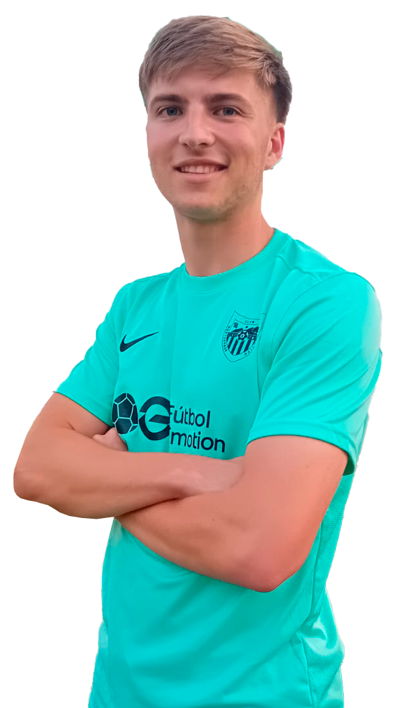 |
aitor-n10-cut.png static/football/images/players/aitor-n10-cut.png |
football/static/football/js/sessions_tactical_pad.js | image | Recorte fotográfico de jugador importable | png | 616x1081 | sí | Útil como family aparte de recortes reales | enlazar | Hay muchos equivalentes en static/football/images/players/. |
| Players | 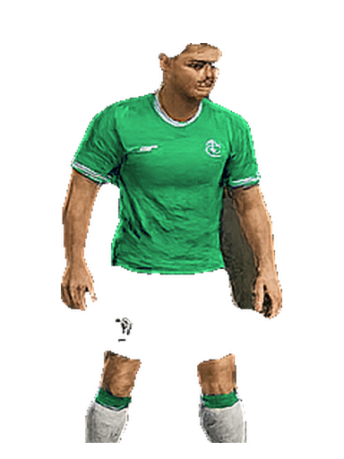 |
premium-local-figure.png static/football/images/token-sprites/premium-local-figure.png |
football/static/football/js/sessions_tactical_pad.js | image | Figura/token local por defecto | png | 384x512 | sí | Útil | reutilizar | |
| Players | 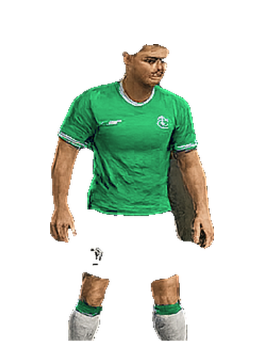 |
premium-local-idle.png static/football/images/token-sprites/premium-local-idle.png |
football/static/football/js/sessions_tactical_pad.js | image | Sprite/token de jugador local | png | 384x512 | sí | Útil para biblioteca 2D si se acepta estilo token | reutilizar | |
| Players | 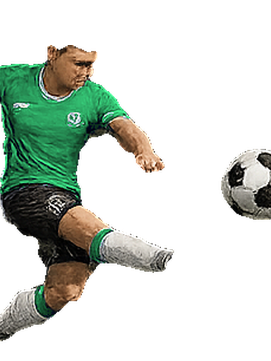 |
premium-local-pass.png static/football/images/token-sprites/premium-local-pass.png |
football/static/football/js/sessions_tactical_pad.js | image | Sprite/token de jugador local pase | png | 384x512 | sí | Útil para animación 2D | reutilizar | |
| Players | 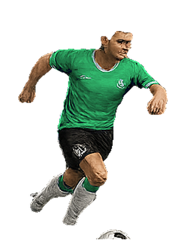 |
premium-local-run.png static/football/images/token-sprites/premium-local-run.png |
football/static/football/js/sessions_tactical_pad.js | image | Sprite/token de jugador local corriendo | png | 384x512 | sí | Útil para animación 2D | reutilizar | |
| Players | 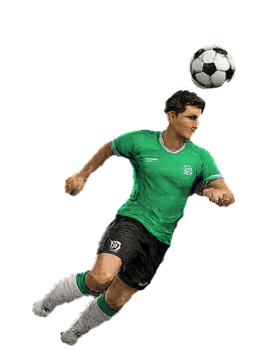 |
premium-local-shoot.png static/football/images/token-sprites/premium-local-shoot.png |
football/static/football/js/sessions_tactical_pad.js | image | Sprite/token de jugador local disparo | png | 384x512 | sí | Útil para animación 2D | reutilizar | |
| Players | 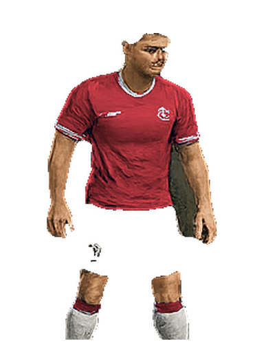 |
premium-rival-figure.png static/football/images/token-sprites/premium-rival-figure.png |
football/static/football/js/sessions_tactical_pad.js | image | Figura/token rival | png | 384x512 | sí | Útil | reutilizar | |
| Players | 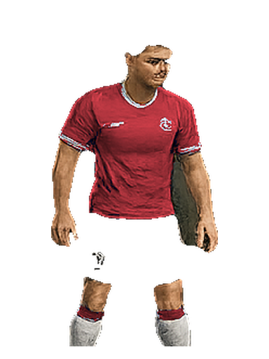 |
premium-rival-idle.png static/football/images/token-sprites/premium-rival-idle.png |
football/static/football/js/sessions_tactical_pad.js | image | Sprite/token rival | png | 384x512 | sí | Útil | reutilizar | |
| Players | 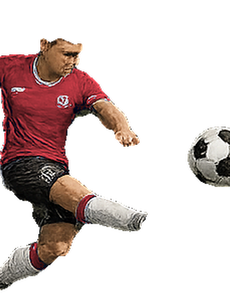 |
premium-rival-pass.png static/football/images/token-sprites/premium-rival-pass.png |
football/static/football/js/sessions_tactical_pad.js | image | Sprite/token rival pass | png | 384x512 | sí | Útil | reutilizar | |
| Players | 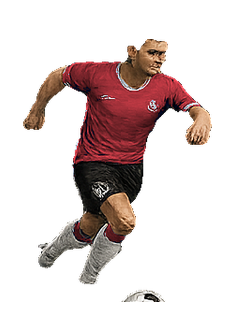 |
premium-rival-run.png static/football/images/token-sprites/premium-rival-run.png |
football/static/football/js/sessions_tactical_pad.js | image | Sprite/token rival run | png | 384x512 | sí | Útil | reutilizar | |
| Players | premium-rival-shoot.png static/football/images/token-sprites/premium-rival-shoot.png |
football/static/football/js/sessions_tactical_pad.js | image | Sprite/token rival shoot | png | 384x512 | sí | Útil | reutilizar | ||
| Goalkeepers | 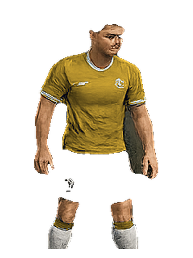 |
premium-goalkeeper-figure.png static/football/images/token-sprites/premium-goalkeeper-figure.png |
football/static/football/js/sessions_tactical_pad.js | image | Figura/token portero | png | 384x512 | sí | Útil | reutilizar | |
| Goalkeepers | 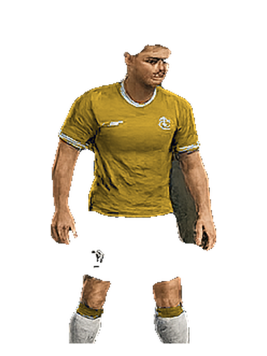 |
premium-goalkeeper-idle.png static/football/images/token-sprites/premium-goalkeeper-idle.png |
football/static/football/js/sessions_tactical_pad.js | image | Sprite/token portero idle | png | 384x512 | sí | Útil | reutilizar | |
| Goalkeepers | 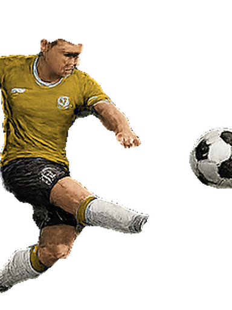 |
premium-goalkeeper-pass.png static/football/images/token-sprites/premium-goalkeeper-pass.png |
football/static/football/js/sessions_tactical_pad.js | image | Sprite/token portero pass | png | 384x512 | sí | Útil | reutilizar | |
| Goalkeepers | 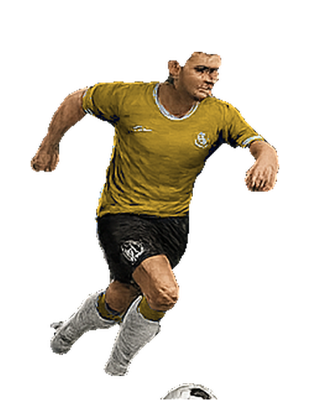 |
premium-goalkeeper-run.png static/football/images/token-sprites/premium-goalkeeper-run.png |
football/static/football/js/sessions_tactical_pad.js | image | Sprite/token portero run | png | 384x512 | sí | Útil | reutilizar | |
| Goalkeepers | 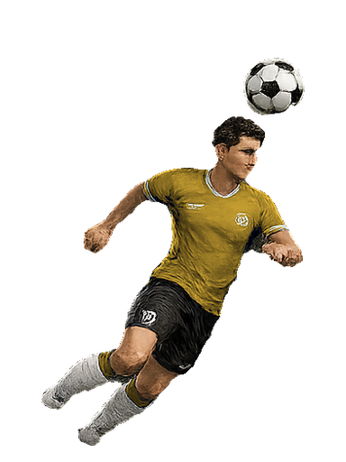 |
premium-goalkeeper-shoot.png static/football/images/token-sprites/premium-goalkeeper-shoot.png |
football/static/football/js/sessions_tactical_pad.js | image | Sprite/token portero shoot | png | 384x512 | sí | Útil | reutilizar | |
| Cones | PROC |
wall cone / cone_striped / pole_marker / gate / hurdle / tape / barrier / rebounder / mannequin / wall |
football/static/football/js/sessions_tactical_pad.js | canvas drawing | fabric shapes agrupadas | canvas drawing | vector/procedural | sí | La mayoría no son assets fichero, sino geometría dibujada. | crear desde cero | |
| Goals | 3D |
goal_premium.glb football/static/football/models/pitch3d/goal_premium.glb |
football/templates/football/task_builder.html | 3d-model | Modelo GLB de portería premium para 3D | glb | n/a | Muy útil | reutilizar | ||
| Goals | PROC |
goal_futsal goal / goal_posts / goal_mini / goal_target / goal_popup / goal_futsal |
football/static/football/js/sessions_tactical_pad.js | canvas drawing | fabric.Rect / fabric.Line / fabric.Group | canvas drawing | vector/procedural | sí | Hoy se pintan proceduralmente; conviene redefinir como family premium. | crear desde cero | |
| Arrows | PROC |
arrow_curve_left arrow_solid / arrow_dash / arrow_curve / arrow_curve_left |
football/static/football/js/sessions_tactical_pad.js | canvas drawing | fabric.Line / fabric.Path / fabric.Triangle agrupados | canvas drawing | vector/procedural | sí | Conviene rehacer con librería vectorial propia, no reutilizar como asset binario. | crear desde cero | |
| Grass | 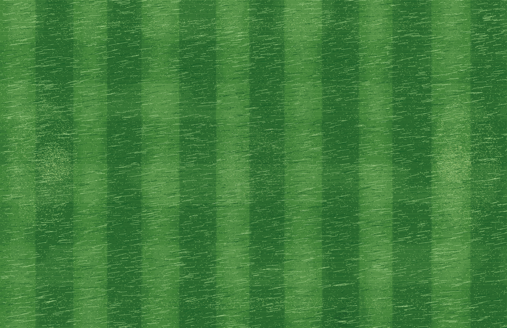 |
grass_premium_albedo.png football/static/football/images/pitch3d/grass_premium_albedo.png |
football/static/football/js/pitch_surface_25d.js | image | Textura principal del césped cenital realista | png | 4096x2652 | no | Asset clave del campo premium | reutilizar | Usado también por task builder vía data attribute. |
| Grass | 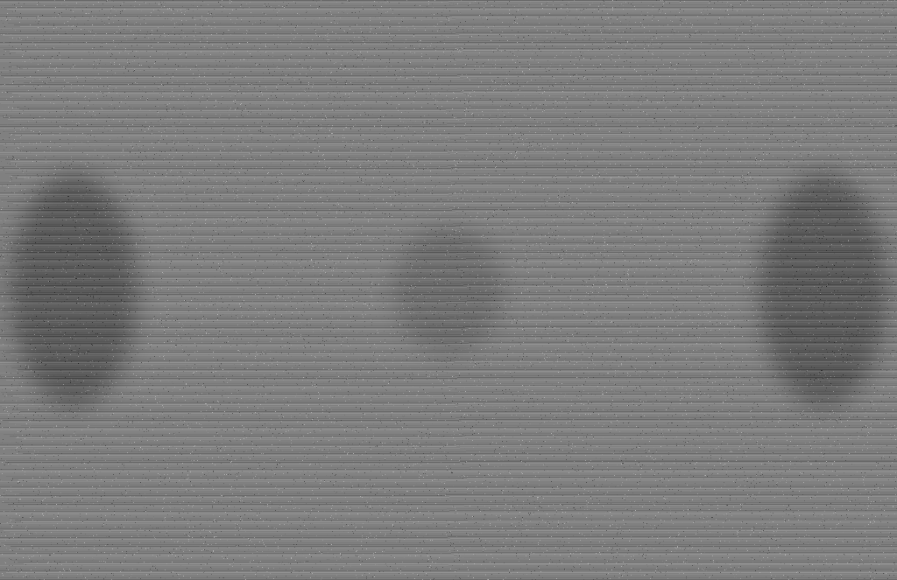 |
grass_premium_bump.png football/static/football/images/pitch3d/grass_premium_bump.png |
football/templates/football/task_builder.html | image | Mapa de bump para 3D | png | 1024x663 | no | Útil solo en pipeline 3D | enlazar | |
| Grass | 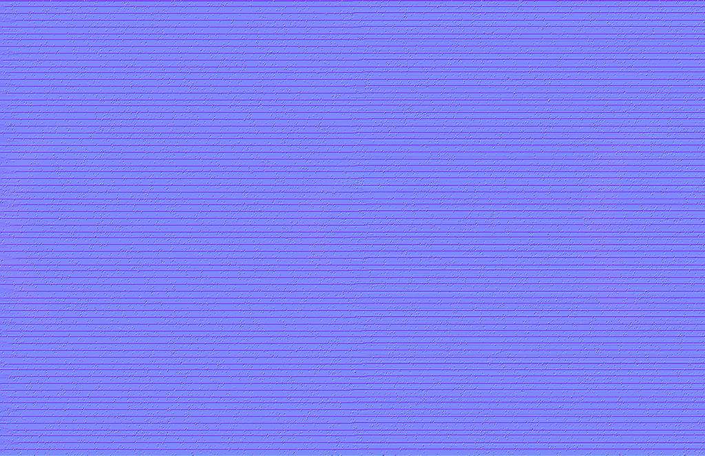 |
grass_premium_normal.png football/static/football/images/pitch3d/grass_premium_normal.png |
football/templates/football/task_builder.html | image | Mapa normal para 3D | png | 1024x663 | no | Útil solo en pipeline 3D | enlazar | |
| Grass | 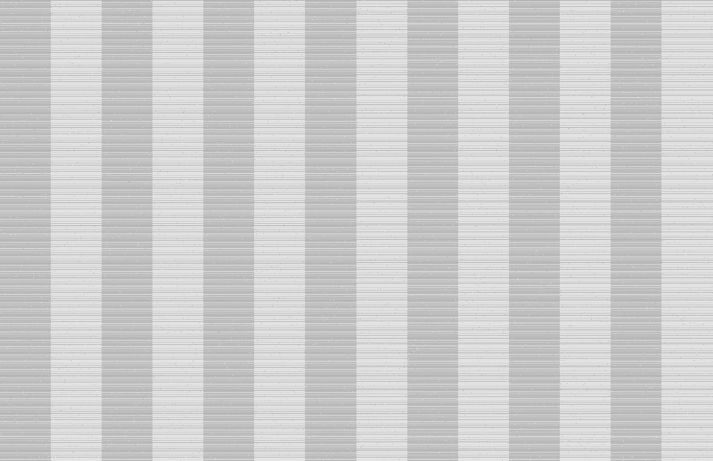 |
grass_premium_roughness.png football/static/football/images/pitch3d/grass_premium_roughness.png |
football/templates/football/task_builder.html | image | Mapa roughness para 3D | png | 1024x663 | no | Útil solo en pipeline 3D | enlazar | |
| Grass | 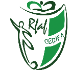 |
grass_uefa_b_tile.png football/static/football/images/surfaces/grass_uefa_b_tile.png |
football/static/football/js/pitch_surface.js | image | SVG <image> pattern / textura de césped del flat preview | png | 139x139 | sí | Muy útil para campo flat/preview | reutilizar | Usado como tile UEFA_B. |
| Fields | 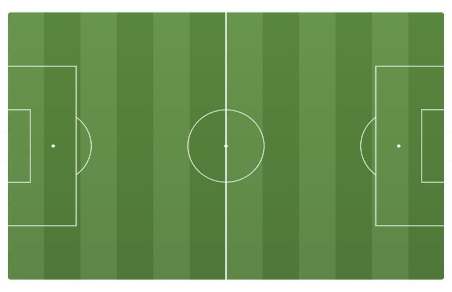 |
campo-futbol-fallback.jpg static/football/campo-futbol-fallback.jpg |
legacy/static | image | Fallback legacy de campo | jpg | 931x602 | no | Obsoleto frente al pipeline nuevo | descartar | |
| Fields |  |
campo-futbol.jpg static/football/campo-futbol.jpg |
legacy/static | image | Campo legacy genérico | jpg | 740x475 | no | No coherente con el nuevo editor premium | descartar | |
| Stadiums | 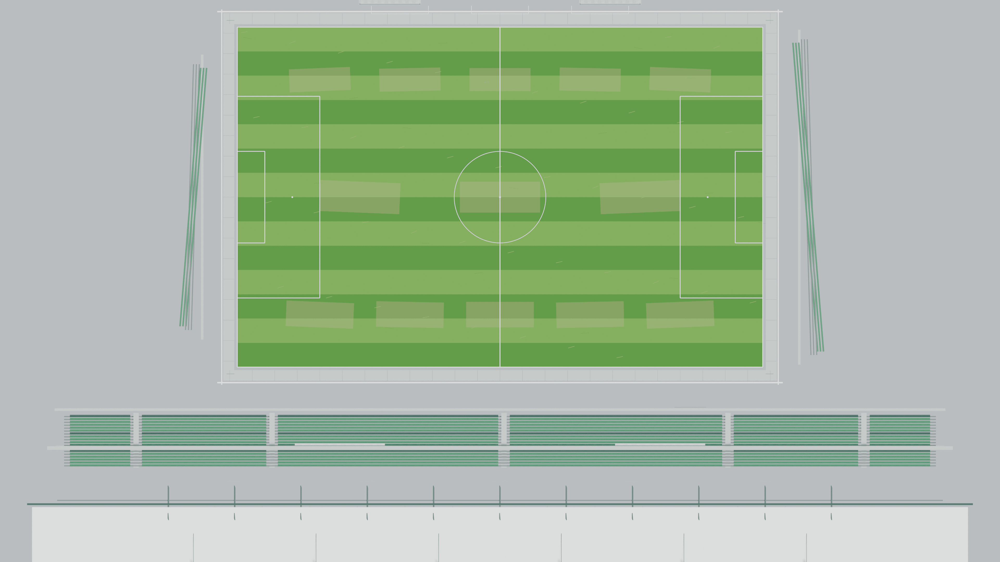 |
stadium_rosaleda_top_h.png football/static/football/images/pitch3d/stadium_rosaleda_top_h.png |
football/static/football/js/pitch_surface_25d.js | image | Top image fallback horizontal del estadio | png | 5272x2636 | sí | Útil como base visual cenital | reutilizar | |
| Stadiums | 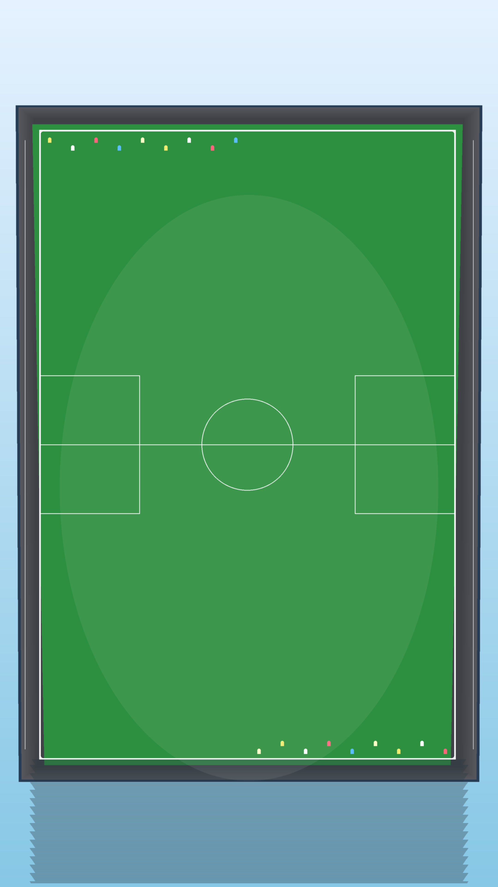 |
stadium_rosaleda_top_v.png football/static/football/images/pitch3d/stadium_rosaleda_top_v.png |
football/static/football/js/pitch_surface_25d.js | image | Top image fallback vertical del estadio | png | 5272x2636 | sí | Útil como base visual cenital | reutilizar | |
| Stadiums | 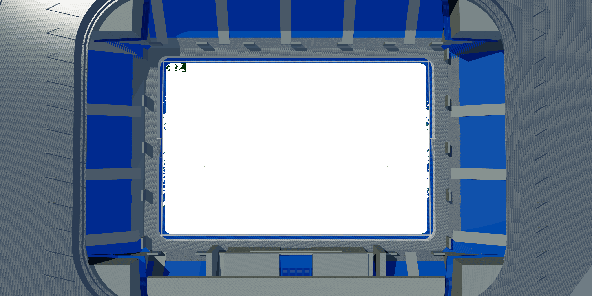 |
stadium_taskboard_overlay_h.png football/static/football/images/pitch3d/stadium_taskboard_overlay_h.png |
football/static/football/js/pitch_surface.js | image | Overlay superior del estadio en horizontal | png | 2636x1318 | sí | Muy útil para superficie 2.5D | reutilizar | |
| Stadiums | 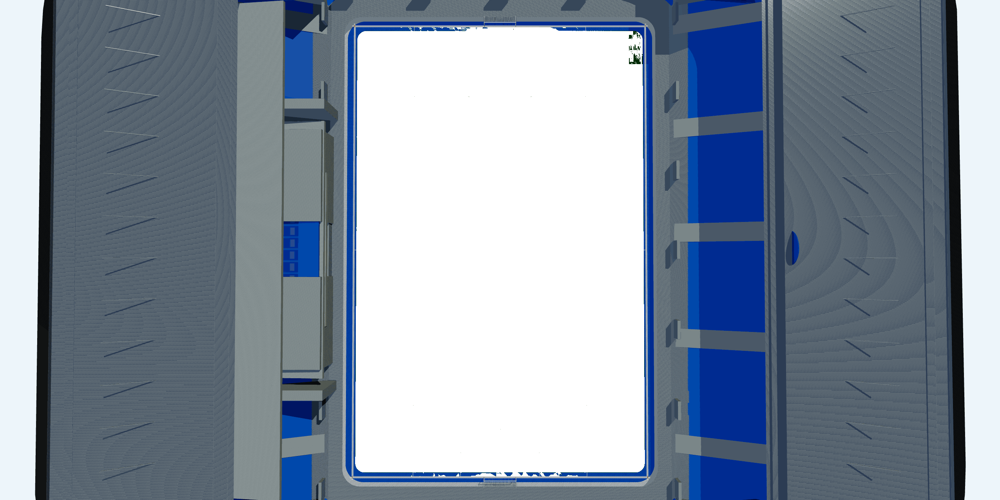 |
stadium_taskboard_overlay_v.png football/static/football/images/pitch3d/stadium_taskboard_overlay_v.png |
football/static/football/js/pitch_surface.js | image | Overlay superior del estadio en vertical | png | 2636x1318 | sí | Muy útil para superficie 2.5D | reutilizar | |
| Stadiums |  |
stadium_taskboard_top_h.png football/static/football/images/pitch3d/stadium_taskboard_top_h.png |
football/templates/football/task_builder.html | image | Top image horizontal inyectada al task builder | png | 2636x1318 | sí | Útil | reutilizar | |
| Stadiums |  |
stadium_taskboard_top_v.png football/static/football/images/pitch3d/stadium_taskboard_top_v.png |
football/templates/football/task_builder.html | image | Top image vertical inyectada al task builder | png | 2636x1318 | sí | Útil | reutilizar | |
| Stadiums | 3D |
stadium_architectural_complete.glb football/static/football/models/pitch3d/stadium_architectural_complete.glb |
football/static/football/js/session_task_detail_3d.js | 3d-model | Carga GLTF/Three.js como estadio principal de la vista 3D | glb | n/a | Muy útil para librería 3D | reutilizar | ||
| Stadiums | 3D |
stadium_benagalbon_reference.glb football/static/football/models/pitch3d/stadium_benagalbon_reference.glb |
football/static/football/js/session_task_detail_3d.js | 3d-model | Referencia/escena alternativa | glb | n/a | Útil como referencia, no principal | enlazar | ||
| Stadiums | 3D |
stadium_bowl_premium.glb football/static/football/models/pitch3d/stadium_bowl_premium.glb |
football/templates/football/task_builder.html | 3d-model | Variante de bowl premium del estadio | glb | n/a | Útil como variante | enlazar | ||
| Zones | PROC |
shape_band_* zone / shape_circle / shape_square / shape_rect / shape_lane_* / shape_grid_120 / shape_band_* |
football/static/football/js/sessions_tactical_pad.js | canvas drawing | fabric.Rect / Circle / Path / hatch groups | canvas drawing | vector/procedural | sí | Deben convertirse en primitives del nuevo motor. | crear desde cero | |
| Lines | PROC |
measure line_solid / line_dash / line_dot / line_pressure / line_defensive / line_offside / measure |
football/static/football/js/sessions_tactical_pad.js | canvas drawing | fabric.Line + labels | canvas drawing | vector/procedural | sí | Son reglas visuales, no assets. | crear desde cero | |
| Textures | 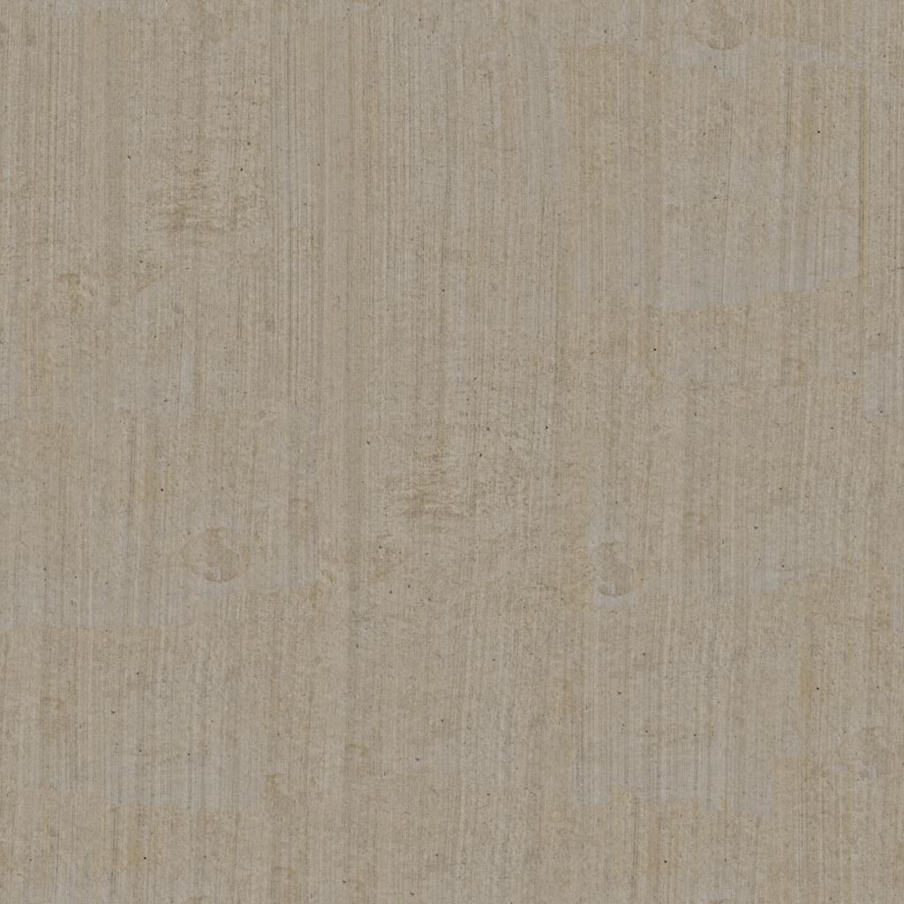 |
Concrete048_1K-JPG_Color.jpg football/static/football/materials/pitch3d/ambientcg/Concrete048/Concrete048_1K-JPG_Color.jpg |
football/templates/football/task_builder.html | image | Textura de hormigón para estadio 3D | jpg | 1024x1024 | no | Útil a medio plazo | enlazar | |
| Textures | 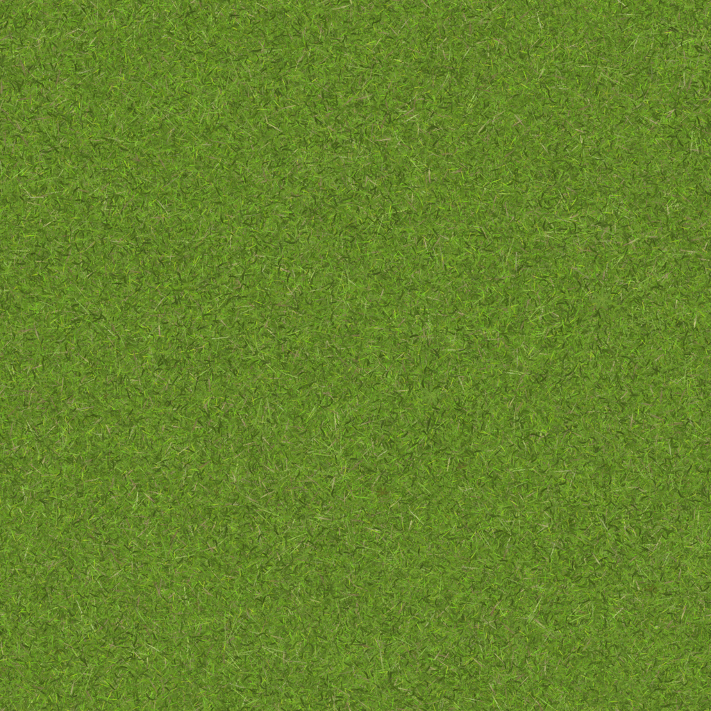 |
Grass005_1K-JPG_Color.jpg football/static/football/materials/pitch3d/ambientcg/Grass005/Grass005_1K-JPG_Color.jpg |
football/static/football/js/session_task_detail_3d.js | image | Textura de material 3D reutilizable | jpg | 1024x1024 | no | Útil a medio plazo | enlazar | Material bruto, no asset UI directo. |
| Icons | 2j-mark.svg football/static/football/images/2j-mark.svg |
football/static/football/js/pitch_surface_25d.js | svg | Marca de la plataforma en overlays/vallas | svg | sí | Útil | reutilizar | |||
| Icons | 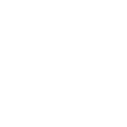 |
uefa-badge.svg football/static/football/images/uefa-badge.svg |
football/static/football/js/pitch_surface_25d.js | svg | Badge UEFA usado en overlays/vallas | svg | sí | Útil | reutilizar | ||
| Logos | 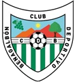 |
benagalbon_crest_alpha.png football/static/football/images/kit_logos/benagalbon_crest_alpha.png |
football/static/football/js/pitch_surface_25d.js | image | Escudo aplicado en estadio/paneles | png | 110x120 | sí | Útil | reutilizar | |
| Logos | grupo_modernia_black_alpha.png football/static/football/images/kit_logos/grupo_modernia_black_alpha.png |
football/static/football/js/pitch_surface_25d.js | image | Variante de logo para vallas/oscuros | png | 500x163 | sí | Útil | enlazar | ||
| Logos | grupo_modernia_white.png football/static/football/images/kit_logos/grupo_modernia_white.png |
football/static/football/js/pitch_surface_25d.js | image | Publicidad / branding en vallas superiores | png | 500x163 | sí | Útil en composición de estadio | reutilizar | ||
| Logos | nike_swoosh.png football/static/football/images/kit_logos/nike_swoosh.png |
football/static/football/js/pitch_surface_25d.js | image | Logo de patrocinio/valla | png | 960x343 | sí | Útil si sigue licenciado internamente | enlazar | ||
| Emojis | ⚽ |
emoji_ball emoji_ball |
football/static/football/js/pitch_surface.js / sessions_tactical_pad.js | emoji | fabric.Text con glyph ⚽ | emoji | font-dependent | sí | Recurso rápido para balón | crear desde cero | Se pinta como texto/emoji, no como imagen. Glyph: ⚽ |
| Emojis | 🦺 |
emoji_bib emoji_bib |
football/static/football/js/pitch_surface.js / sessions_tactical_pad.js | emoji | fabric.Text con glyph 🦺 | emoji | font-dependent | sí | Recurso rápido para peto | crear desde cero | Se pinta como texto/emoji, no como imagen. Glyph: 🦺 |
| Emojis | 🧑🏫 |
emoji_coach emoji_coach |
football/static/football/js/pitch_surface.js / sessions_tactical_pad.js | emoji | fabric.Text con glyph 🧑🏫 | emoji | font-dependent | sí | Recurso rápido para entrenador | crear desde cero | Se pinta como texto/emoji, no como imagen. Glyph: 🧑🏫 |
| Emojis | 🔺 |
emoji_cone emoji_cone |
football/static/football/js/pitch_surface.js / sessions_tactical_pad.js | emoji | fabric.Text con glyph 🔺 | emoji | font-dependent | sí | Recurso rápido para cono | crear desde cero | Se pinta como texto/emoji, no como imagen. Glyph: 🔺 |
| Emojis | 🥅 |
emoji_goal emoji_goal |
football/static/football/js/pitch_surface.js / sessions_tactical_pad.js | emoji | fabric.Text con glyph 🥅 | emoji | font-dependent | sí | Recurso rápido para portería | crear desde cero | Se pinta como texto/emoji, no como imagen. Glyph: 🥅 |
| Emojis | 🚧 |
emoji_hurdle emoji_hurdle |
football/static/football/js/pitch_surface.js / sessions_tactical_pad.js | emoji | fabric.Text con glyph 🚧 | emoji | font-dependent | sí | Recurso rápido para valla | crear desde cero | Se pinta como texto/emoji, no como imagen. Glyph: 🚧 |
| Emojis | 🪜 |
emoji_ladder emoji_ladder |
football/static/football/js/pitch_surface.js / sessions_tactical_pad.js | emoji | fabric.Text con glyph 🪜 | emoji | font-dependent | sí | Recurso rápido para escalera | crear desde cero | Se pinta como texto/emoji, no como imagen. Glyph: 🪜 |
| Emojis | 🧍 |
emoji_mannequin emoji_mannequin |
football/static/football/js/pitch_surface.js / sessions_tactical_pad.js | emoji | fabric.Text con glyph 🧍 | emoji | font-dependent | sí | Recurso rápido para maniquí | crear desde cero | Se pinta como texto/emoji, no como imagen. Glyph: 🧍 |
| Emojis | 🥅 |
emoji_mini_goal emoji_mini_goal |
football/static/football/js/pitch_surface.js / sessions_tactical_pad.js | emoji | fabric.Text con glyph 🥅 | emoji | font-dependent | sí | Recurso rápido para mini portería | crear desde cero | Se pinta como texto/emoji, no como imagen. Glyph: 🥅 |
| Emojis | 📍 |
emoji_pole emoji_pole |
football/static/football/js/pitch_surface.js / sessions_tactical_pad.js | emoji | fabric.Text con glyph 📍 | emoji | font-dependent | sí | Recurso rápido para pica | crear desde cero | Se pinta como texto/emoji, no como imagen. Glyph: 📍 |
| Emojis | ⭕ |
emoji_ring emoji_ring |
football/static/football/js/pitch_surface.js / sessions_tactical_pad.js | emoji | fabric.Text con glyph ⭕ | emoji | font-dependent | sí | Recurso rápido para aro | crear desde cero | Se pinta como texto/emoji, no como imagen. Glyph: ⭕ |
| Emojis | 👥 |
emoji_staff emoji_staff |
football/static/football/js/pitch_surface.js / sessions_tactical_pad.js | emoji | fabric.Text con glyph 👥 | emoji | font-dependent | sí | Recurso rápido para staff | crear desde cero | Se pinta como texto/emoji, no como imagen. Glyph: 👥 |
| Emojis | ⏱️ |
emoji_stopwatch emoji_stopwatch |
football/static/football/js/pitch_surface.js / sessions_tactical_pad.js | emoji | fabric.Text con glyph ⏱️ | emoji | font-dependent | sí | Recurso rápido para cronómetro | crear desde cero | Se pinta como texto/emoji, no como imagen. Glyph: ⏱️ |
| Emojis | 🧱 |
emoji_wall emoji_wall |
football/static/football/js/pitch_surface.js / sessions_tactical_pad.js | emoji | fabric.Text con glyph 🧱 | emoji | font-dependent | sí | Recurso rápido para muro | crear desde cero | Se pinta como texto/emoji, no como imagen. Glyph: 🧱 |
| Emojis | 📣 |
emoji_whistle emoji_whistle |
football/static/football/js/pitch_surface.js / sessions_tactical_pad.js | emoji | fabric.Text con glyph 📣 | emoji | font-dependent | sí | Recurso rápido para silbato | crear desde cero | Se pinta como texto/emoji, no como imagen. Glyph: 📣 |
| Tokens/Jerseys | canvas drawing + optional image |
goalkeeper_rival player_local / player_rival / player_away / goalkeeper_local / goalkeeper_rival |
football/static/football/js/sessions_tactical_pad.js | canvas drawing + optional image | fabric.Group con anillos, jersey SVG embebida, textos y opcional badge image | canvas drawing + optional image | vector/procedural | sí | Reutilizable la lógica semántica; visual final conviene rehacer. | reutilizar parcialmente |
5. Propuesta inicial de biblioteca desde cero
| Familia | Base actual | Decisión |
|---|---|---|
| Campos | Base desde grass_premium_* + stadium_taskboard_overlay_* + stadium_rosaleda_top_* | Reutilizar + versionar en assets_library/fields y stadiums |
| Porterías | goal_premium.glb para 3D; family SVG nueva para 2D | Rehacer 2D premium, reutilizar 3D |
| Jugadores | token-sprites premium-* + player-avatar.svg + players/* recortados | Separar en families: token, cutout, future premium |
| Porteros | premium-goalkeeper-* | Reutilizar como base inmediata |
| Balones | procedural actual + emoji_ball | Crear family nueva y dejar emoji como fallback |
| Conos/Picas | procedural actual + emoji_cone/pole | Crear family vectorial nueva |
| Flechas/Líneas | procedural actual | Redibujar como family vectorial premium |
| Chapas/Camisetas | jersey SVG embebida en JS + token groups | Extraer a family dedicada |
| Logos/Vallas | kit_logos/* + 2j-mark + uefa-badge | Reutilizar en stadium ads/presentation |